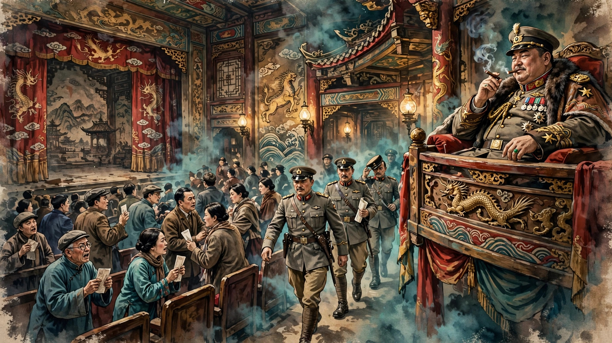
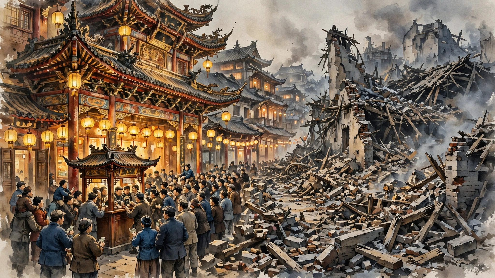

无意挑战经典？但经典是无法绕过的
陈佩斯这个名字对于很多7080后来说应该不会陌生。甚至可以说，在春晚早期，这曾经是个如雷贯耳的名字。他为数不多的几个春晚小品（与演员朱时茂合作），个个都成为经典。里面的一些台词甚至成为直到今天还在流行的梗（这里就不举例了知道的自然知道，有兴趣的可以自己去搜）。在因某些原因沉寂多年后，他再次出现在我们的视野里。不过这次换了一个全新的身份，不再是家喻户晓的喜剧演员，而是导演。
对，我接下来要谈的就是陈佩斯导演的新片《戏台》。先说我的总体感受，算是一部故事基本合格、有笑点有泪点的悲喜剧，但总觉得缺点什么，甚至哪里不太对劲。我承认，我对陈佩斯这样级别的资深演员的新作是有期待的，但老实说此片没有达到我期待的水准。
《戏台》的故事很简单，简单得有点像舞台剧甚至小品（所以剧透也无所谓，但介意者请谨慎阅读）。影片背景设在民国初年军阀混战时期，但故事显然是架空虚构的，和真实历史不搭界。一个叫“洪（红）大帅”的军阀攻入京城，赶走之前盘踞京城的另一军阀。洪大帅白手起家，带着十几杆枪起事。如今声势浩大，甚至入主京城，也算志得意满。时值京城里一家著名戏院请来一京剧花脸名角与本地一名花旦名角演出《霸王别姬》。虽然京城内外硝烟初定，风雨飘摇，但毫不影响一众票友捧场。戏院内外热闹非凡，和满城的断壁残垣形成鲜明对比。戏班老板已率领所有演职员到达戏院做演出准备，只有被邀请的名角迟迟未到。后来有人带来消息，好抽大烟的这位名角在来的路上“抽大发”了，目前不省人事。戏班老板和戏院老板都急得像热锅上的蚂蚁，正不知如何向广大票友交代。这时却发生了更添乱的事。洪大帅的六姨太是该名角的铁杆粉丝，在其请求下，洪大帅派兵去通知戏院包场。戏院老板得罪不起大帅，只得通知已购票票友退票。接下来又发生了一系列令人啼笑皆非的巧合事件，以至戏台上下上演了一幕又一幕荒诞不经的闹剧，直到洪大帅被另一位叫“蓝大帅”的军阀赶出京城。


从上面的剧情梗概可以看出，整出电影除了交代背景有点战争戏外，其他场景基本集中在戏院内外和戏台上下。所以，影片感觉有点像话剧或小品的设定。此类影片更考验导演讲故事的能力和演员表演的功底。影片的几位主演陈佩斯、黄渤和姜武的表演自不必说，完全撑得起这样体量的故事。但说到故事吧，我总觉得差点火候。你说故事是想通过军阀的愚蠢和专横来制造黑色幽默，以表现旧时代艺人在艰难求生时保持尊严的不易。但很多描写流于表面，没有给人物太多发挥的余地。你说这其实就一喜剧，博君一笑，何必深究。那剧中那些笑中带泪的点，又让人对当时的艺人心生同情，实在笑不出来。所以，总觉得，影片的主创想表达的东西很多，但最终有效传达给观众的东西却很少。
另外，从纯喜剧的角度看（这应该也是陈佩斯最擅长的部分），影片的表现也是低于预期的。可以说影片中很多笑料不太“高级”。例如六姨太乱入戏院，一会“压腿”，一会“吊嗓”的，虽然全程着实辛苦，但也看得银幕外的观众都替她尴尬。不是说喜剧不可以低俗，但你在旧时代艺人在夹缝中求生的背景下频繁整这些低俗的喜剧桥段，的确让人感觉很违和。另外用”项羽必须过江”这样类似“关公战秦琼”的荒诞来表现军阀的无知和蛮横，在传统相声里早已有之，也算不上有新意。
最后，在看这部电影的时候，我很难不联想起陈凯歌的《霸王别姬》，并进一步将两者加以比较。因为故事的背景和内核有诸多相似之处（都是讲乱世梨园行的坎坷），不由得不引起这样的联想。这样一联想一比较，感觉《戏台》作为新作的压力就太大了。毕竟《霸王别姬》在中国影史的地位至今无人能撼动。所以《戏台》选取这样的题材来创作是需要勇气的。但光有勇气还不够，没有足够的创新和实力，挑战经典谈何容易。当然主创人员可能本无意这所谓的“挑战”，题材的相似只是巧合罢了，但你毕竟无法阻止观众作这样的联想。所以，影片在题材上撞车经典，也是一个客观的劣势。
尽管有以上所述的种种客观主观上的问题，总体来说，这部影片的完成度还是不错的，总体质量在鱼龙混杂的当今影坛也算中上水平。期待陈导更多的喜剧作品。